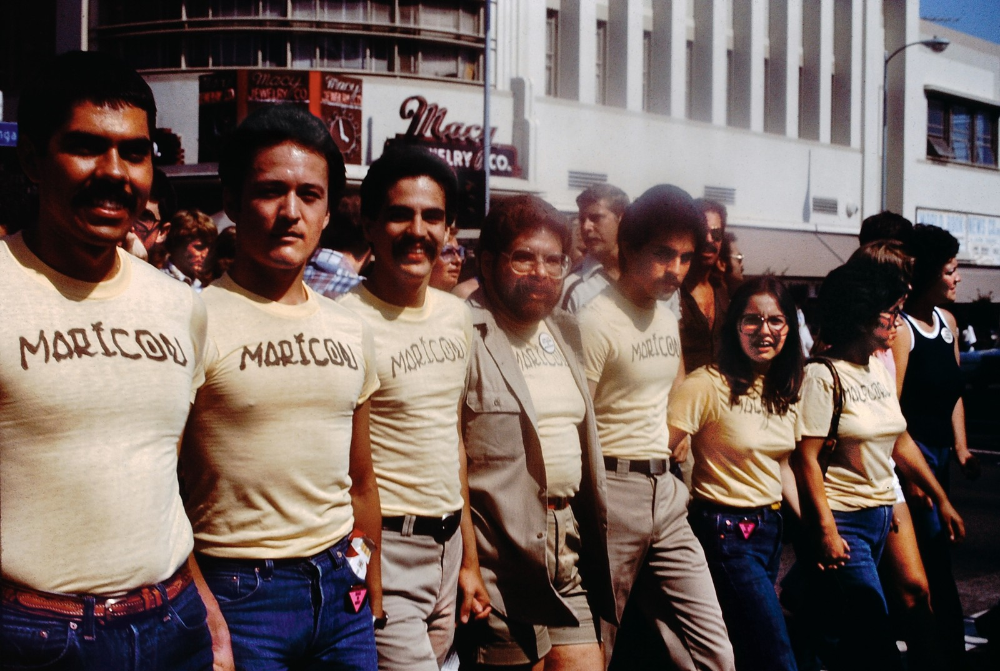

LAURA AGUILAR
Laura Aguilar was an American photographer. She was born with auditory dyslexia and attributes her start in photography to her brother who showed her how to develop in dark rooms. She was mostly self-taught although she took some photography courses at East Los Angeles College where her second solo exhibition Laura Aguilar: Show and Tell was held. She is well known for her portraits, mostly of herself and also focused upon people in marginalized communities including LGBT and Latino subjects and obese people. Aguilar worked primarily in the genre of portraiture. Her work centers on the human form and challenges contemporary social constructs of beauty, focusing upon Latina lesbians, black people, and the obese. According to critics, she often used self-portraiture to come to terms with her own body as she challenged societal norms of sexuality, class, gender, and race.
MUNDO MEZA
Edmundo Meza was an artist and activist who was born in Tijuana, Mexico and grew up in East Los Angeles. He discovered his passion for the area's avant-garde culture in early 1970. Before becoming known as an artist, Mundo Meza worked for shoe designer Fred Slatten on Santa Monica Boulevard as a window dresser. He also painted unique designs onto Slatten's platform shoes, gathering a celebrity clientele which included Cher, Elton John, and Diana Ross. He played a pivotal role in the emergence of Chicano conceptualists which included Robert Legorreta (Cyclona), Joey Terrill, Teddy Sandoval, Jack Vargas and members of the collective Asco led by Harry Gamboa, Jr., Gronk, Willie Herrón, and Patssi Valdez.His work was highly influenced by the Chicano artistic community which has recently started to receive public recognition due to its panache, confrontational aesthetics, and extravagance.
PATSSI VALDEZ
Patssi Valdez is an American Chicana artist, living and working in Los Angeles, California. She is a founding member of the art collective, Asco.Valdez's work represents some of the finest Chicana avant-garde expressionism. Valdez was a founding member of the Asco artist collective. Valdez started working with Asco right out of high school. She was very involved with street performance art and "cinematic Goth film stills" during the 1970s and 1980s.Valdez relates that during her time in Asco, she had "grand ideas about being a great painter, but she felt lacked the skills she needed to be a successful painter. She focused on performance art, installations and photography. She made work that reflected shared "political and social concerns." Valdez' installations are considered feminist works that defy cultural expectations of a woman's role in society.The temporary nature of her installations also tap into the "Mexican cultural practice of the impermanent."
